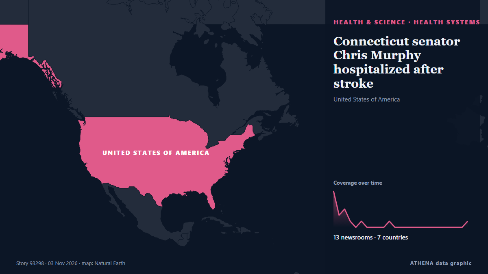

Gesundheitssysteme
| 22. Okt. | 0 |
|---|---|
| 23. Okt. | 0 |
| 24. Okt. | 0 |
| 25. Okt. | 0 |
| 26. Okt. | 0 |
| 27. Okt. | 0 |
| 28. Okt. | 0 |
| 29. Okt. | 2 |
| 30. Okt. | 2 |
| 31. Okt. | 3 |
| 1. Nov. | 1 |
| 2. Nov. | 8 |
| 3. Nov. | 1 |
| 4. Nov. | 0 |
Schlagzeilen werden auf Englisch angezeigt, wie veröffentlicht.

Connecticut senator Chris Murphy hospitalized after stroke
Democratic senator was at his son’s hockey game when he felt a numbness in his arm and was in Johns Hopkins Democratic US Senator Chris Murphy has been hospitalized after suffering a stroke. von The Guardian
NFL-Lions report positive progress for linebacker Campbell after injury
Jack Campbell took a hard hit on his helmet from T.J. von Times of India
Medicare Open Enrollment Ends Dec. 7: Give Your Plan a Check-up
The ACA health insurance marketplaces — find yours at HealthCare.gov — open Nov. von NPR
Doctor in Germany on trial over sex abuse of over 70 children
The doctor was arrested roughly a year ago after the mother of a child reported suspected abuse to authorities. von IOL
Colombia Offers 120 Healthcare Jobs in Spain With Permanent Contracts
Colombia has opened 120 healthcare jobs in Spain for doctors and nurses, offering permanent contracts and monthly salaries equivalent to approximately 8 million to 12 million pesos… von Colombia One
Health insurance plan costs on Healthcare.gov to rise by double digits in 2027
Obamacare enrollees could see their health insurance premiums rise by double digits for a second year in a row, according to a report published Friday. von The Hill
Ex-MP Amrin Amin's foodpanda delivery rider outfit for Halloween sparks debate
Tone deaf? Or like dressing up as a nurse or doctor or cop? von Mothership
More than 1,500 people awaiting organ donation in Azerbaijan
Thessaloniki's George Papanikolaou Hospital ranks first in Northern Greece for organ donation as doctors highlight the process and its life-saving impact. von Greek City Times
California doctor gets 15 years for $45m Medicare fraud using fake Botox claims
California doctor Violetta Mailyan has been sentenced to 15 years in federal prison for defrauding Medicare of more than $45 million through fake Botox injection claims. von Times of India
Chong Wei: Making tough decisions for Malaysian badminton comes with criticism
KUALA LUMPUR: Former world number one Lee Chong Wei is prepared to face public criticism as he navigates the challenges of driving change in Malaysian badminton, insisting that difficult decisions… von New Straits Times
Halloween chaos in Lancashire as three children arrested and one in hospital after illegal party
Over 200 children attended the party in Lancashire. von Manchester Evening News
Mata Ayer assemblyman Wan Badariah dies at 50
KANGAR: Mata Ayer assemblyman Wan Badariah Wan Saad has died. von New Straits Times